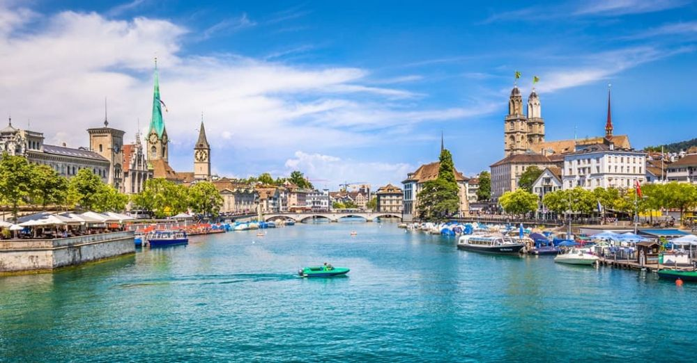

Descoperă Zurich - O călătorie în Elveția
Zurich este un oraș vibrant și cultural situat pe malurile râului Limmat, oferind o varietate de atracții captivante pentru vizitatori:
-

Centrul istoric din Zurich - Istorie și arhitectură
Explorați străzile înguste și piețele pitorești ale centrului istoric, pline de clădiri istorice și biserici.
-

Lacul Zurich - Relaxare lângă apă
Bucurați-vă de plimbări relaxante pe malul lacului sau de o croazieră scenică pe apele limpezi.
-

Muzeul Ceasurilor din Zurich - Pasiune pentru ceasuri
Descoperiți colecții impresionante de ceasuri în acest muzeu dedicat artei timpului.
-

Muzeul Național Elvețian din Zurich - Patrimoniu cultural
Vizitați acest muzeu pentru a explora istoria și cultura Elveției prin colecții diverse.
-

Shopping în Zurich - Paradisul cumpărăturilor
Închiriați-vă într-o experiență de shopping de lux în magazinele de pe Bahnhofstrasse.
Concluzii
Zurich îmbină frumusețea istorică cu rafinamentul modern, oferind o experiență urbană variată și culturală.